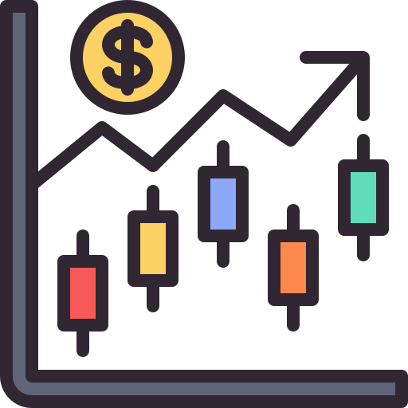
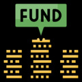

원뎅이의 미국 통화 유동성 현황
자료 출처: FRED, Office of Financial Research (OFR)
중앙은행 FED
미국 정부

미국 시장(Market)

MMF
(Money Market Fund)
원뎅이의 미국 통화 유동성 현황
자료 출처: FRED
중앙은행 FED
미국 정부
미국 시장(Market)
시중은행(Bank)
미국 자금 현황
미 정부 TGA 잔고
미 은행 지급준비금
연준 역레포 자금
MMF 잔고
연준 전체 자산 + 부채
금리
3개월 미 국채금리
1년물 미 국채금리
10년물 미 국채금리
SOFR 금리
EFFR 금리
IORB 금리
역레포 금리
연준 할인율
미 은행 연체율(전체)
SOFR, EFFR 스프레드
SOFR, IORB 스프레드
유동성
M2
M1
자산 가격
나스닥100 지수
S&P500 지수
S&P500 시가총액
선행지표
자동차, 트럭 판매량
주택 착공 허가 건수
국제 유가
◄
Info
1M
6M
1Y
5Y
10Y
All
◄
유동성 현황
금리 현황
그래프 지표